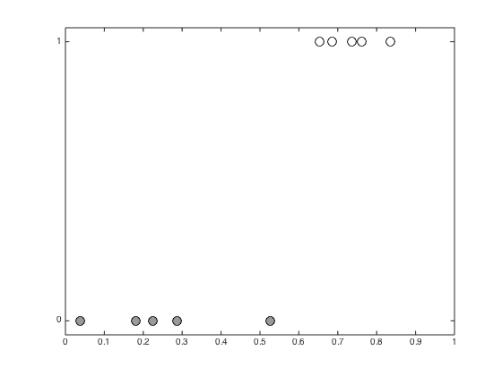
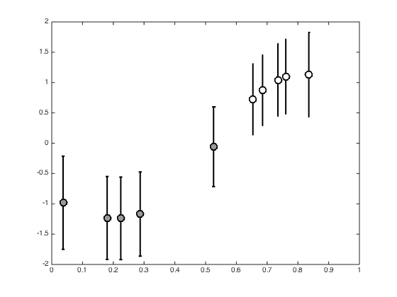
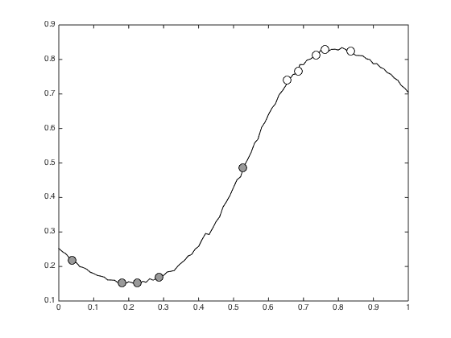

Contents
gibbs_gp_class.m
Using gibbs sampling for binary GP classification Gaussian
From A First Course in Machine Learning Simon Rogers, August 2016 [simon.rogers@glasgow.ac.uk]
clear all;close all;
Generate a dataset
rng(222) x = sort(rand(10,1)); N = length(x); t = [repmat(0,5,1);repmat(1,5,1)];
Plot the data
figure(1);hold off pos = find(t==0); plot(x(pos),t(pos),'ko','markerfacecolor',[0.6 0.6 0.6],'markersize',10); hold on pos = find(t==1); plot(x(pos),t(pos),'ko','markerfacecolor',[1 1 1],'markersize',10); xlim([0 1]); ylim([-0.05 1.05]); set(gca,'ytick',[0 1])
Define a test set for visualisation
testx = [0:0.01:1]'; Ntest = length(testx); % Set the number of Gibbs samples to draw S = 10000; % Initialise the auxiliary variables, y y = randn(size(x)); y(t==0) = y(t==0) - 2; y(t==1) = y(t==1) + 2; % Objects to store the sampled values allF = zeros(S,N); allT = zeros(S,Ntest); allFstar = zeros(S,Ntest); trainTall = zeros(S,N);
Set the hyperparameters and create the covariance matrices
gamma = 10.0; alpha = 1; C = zeros(N); R = zeros(N,Ntest); for n = 1:N for m = 1:N C(n,m) = alpha*exp(-gamma*(x(n)-x(m))^2); end for m = 1:Ntest R(n,m) = alpha*exp(-gamma*(x(n) - testx(m))^2); end end
Main sampling loop
sif = inv(inv(C) + eye(N)); Ci = inv(C); % Loop over the number of desired samples for s = 1:S % Update f f = mvnrnd(sif*y,sif); allF(s,:) = f; % update y (using rejection sampling) for n = 1:N finished = 0; while ~finished y(n) = randn + f(n); if y(n)*(2*t(n)-1) > 0 finished = 1; end end end % Sample a predictive function f^* f_star_mu = R'*Ci*f'; f_star_ss = alpha - diag(R'*(C\R)); % Look out for -ve values caused by f_star = randn(Ntest,1).*sqrt(f_star_ss) + f_star_mu; allFstar(s,:) = f_star'; % Use this to make (and store) some predictions y_star = randn(Ntest,1) + f_star; allT(s,:) = (y_star>0)'; tempy = randn(N,1) + f'; trainTall(s,:) = (tempy>0)'; end
Plot the posterior f values
figure(); hold off pos = find(t==0); errorbar(x(pos),mean(allF(:,pos)),std(allF(:,pos)),'ko','linewidth',2,'markerfacecolor',[0.6 0.6 0.6],'markersize',10) hold on pos = find(t==1); errorbar(x(pos),mean(allF(:,pos)),std(allF(:,pos)),'ko','linewidth',2,'markerfacecolor',[1 1 1],'markersize',10) xlim([0 1]) yl = ylim; xl = xlim;
Plot 10 randomly selected samples of f from the posterior
nplot = 10; order = randperm(S); figure(); hold off plot(testx,allFstar(order(1:nplot),:),'k','color',[0.6 0.6 0.6]) hold on % Add the mean and std to the plot plot(testx,mean(allFstar),'k','linewidth',2) plot(testx,mean(allFstar)+std(allFstar),'k--','linewidth',2) plot(testx,mean(allFstar)-std(allFstar),'k--','linewidth',2) pos = find(t==0); errorbar(x(pos),mean(allF(:,pos)),std(allF(:,pos)),'ko','linewidth',2,'markerfacecolor',[0.6 0.6 0.6],'markersize',10) pos = find(t==1); errorbar(x(pos),mean(allF(:,pos)),std(allF(:,pos)),'ko','linewidth',2,'markerfacecolor',[1 1 1],'markersize',10) xlim(xl); ylim(yl);

Plot the mean predictive probabilities
figure(); hold off plot(testx,mean(allT),'k') hold on traint = mean(trainTall,1); pos = find(t==0); plot(x(pos),traint(pos),'ko','markerfacecolor',[0.6 0.6 0.6],'markersize',10); pos = find(t==1); plot(x(pos),traint(pos),'ko','markerfacecolor',[1 1 1],'markersize',10);